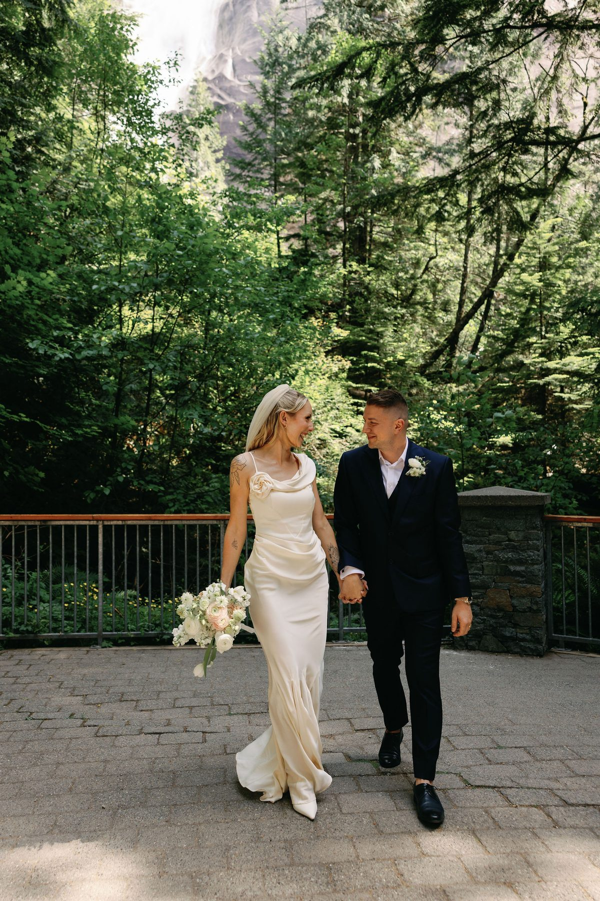
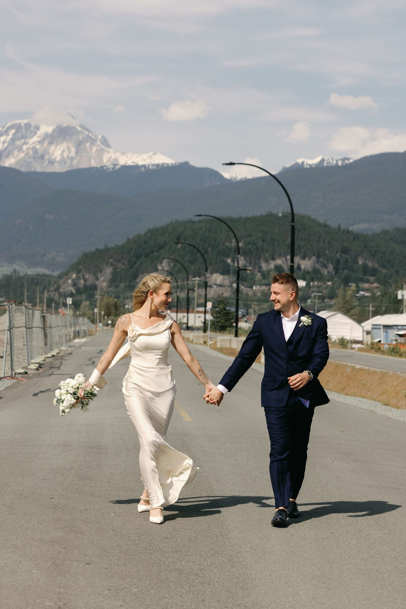
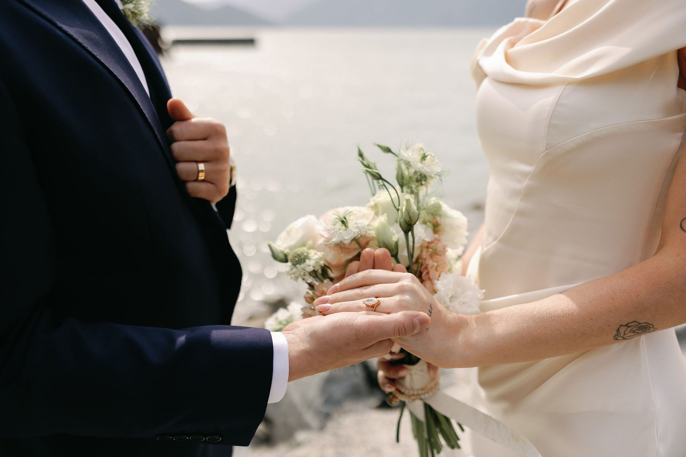
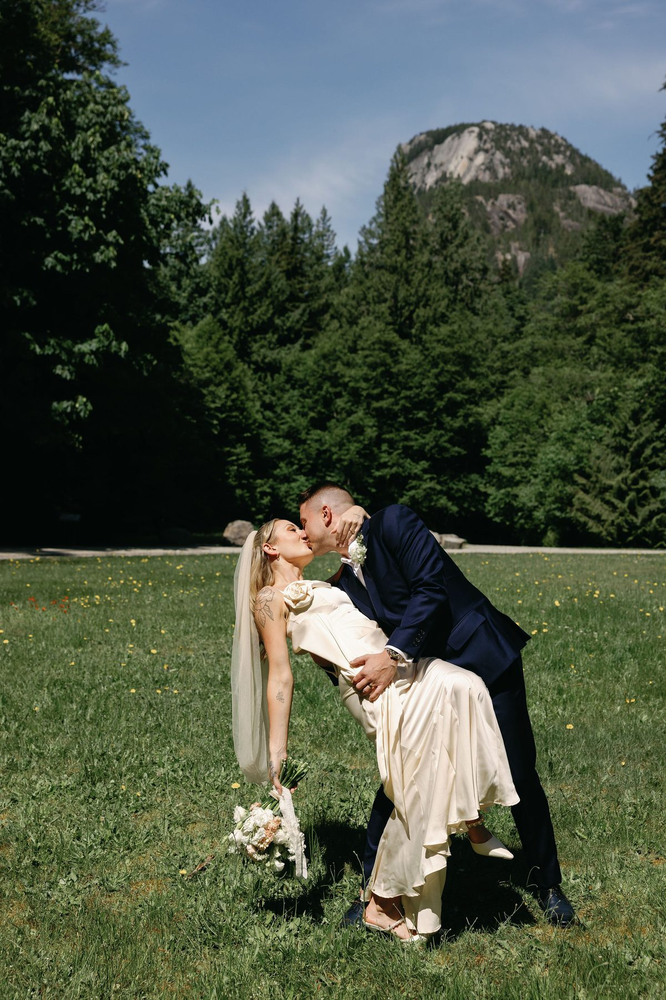
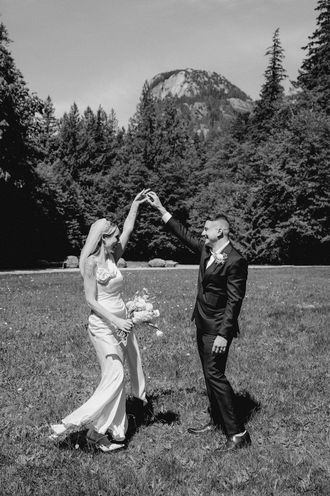
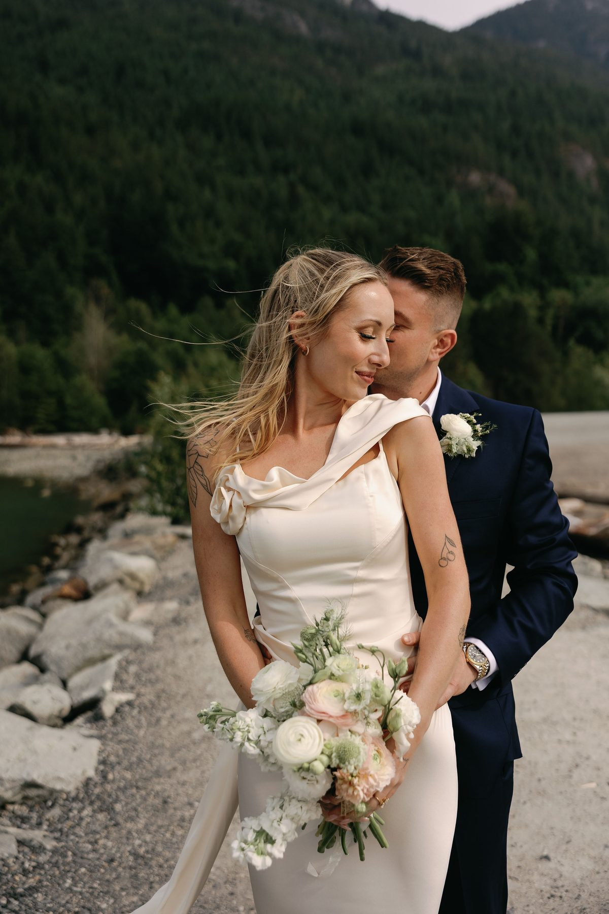
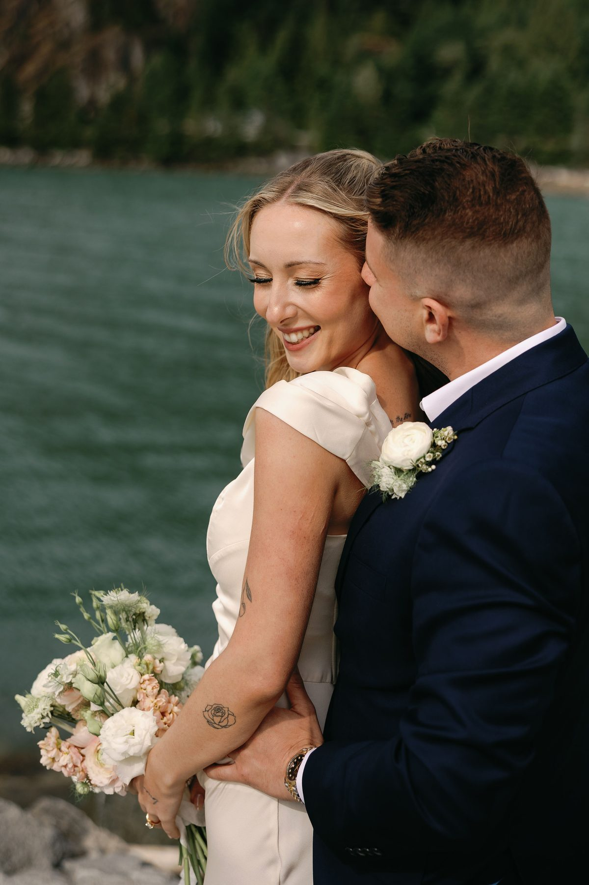
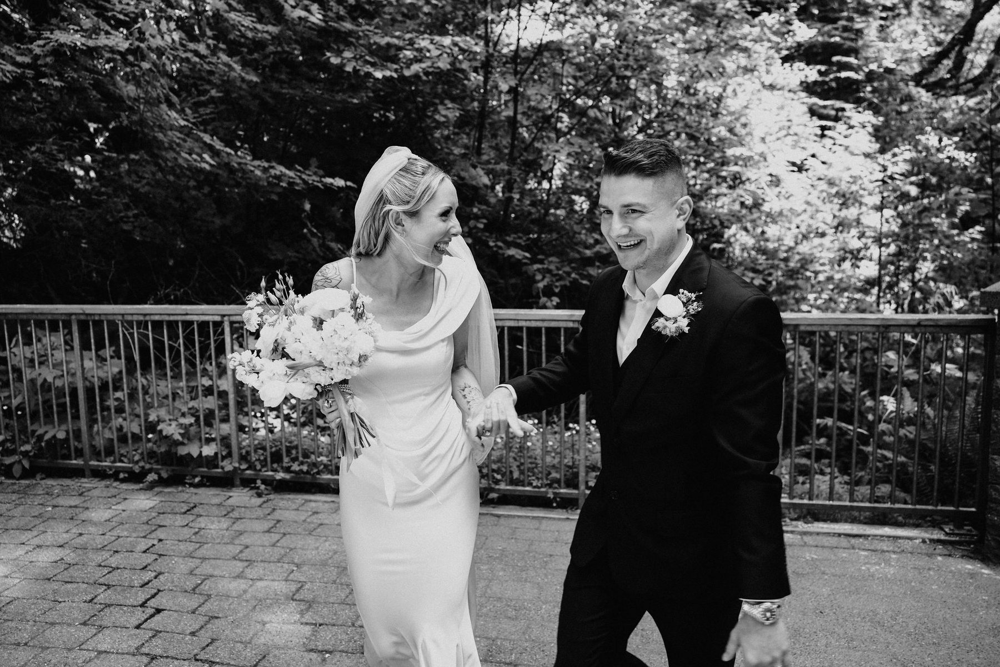
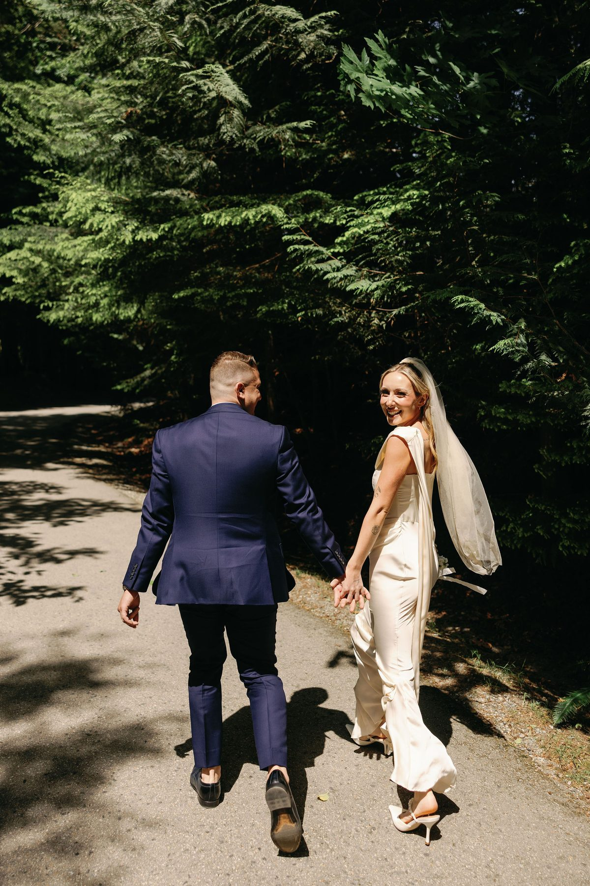

Planning a Vancouver elopement? Here's everything you need — from choosing a location and getting your permit to hiring a photographer and nailing your timeline.
Elopements are having a moment in Vancouver — and not because couples are trying to avoid commitment. They're doing it because they want their wedding day to actually feel like something. No vendor spreadsheets. No seating chart negotiations. Just a beautiful location, the right photographer, and a day built entirely around the two of you.
If you're thinking about eloping in Vancouver, here's how to do it well.

Step 1: Get Clear on Your Vision
Before you book anything, spend ten minutes answering three questions: Where do you picture being? What time of day? How dressed up do you want to be?
Those answers will narrow everything else — your location, your photographer's style, your timeline, your outfit. Vancouver gives you an enormous range to work with. You can elope in a rainforest, on a rocky coastline, in a heritage garden, against a city skyline, or on a mountain with the whole Lower Mainland below you. Knowing which direction pulls you makes every other decision faster.
If you're struggling to articulate the vibe, look at photography portfolios first. Your gut reaction to images is usually more honest than anything you'd write on a mood board.

Step 2: Pick Your Date Strategically
Vancouver's weather is famously unpredictable, but there are better and worse bets depending on what you're after.
June through September gives you the best odds of sun and the longest golden hour windows. Late April and May offer cherry blossom season and softer, more romantic light — with fewer crowds than summer. October can be stunning: moody skies, fall colour, mist in the trees, and very few other people at most locations.
If you're set on a specific spot, research how busy it gets. Stanley Park's famous spots can feel like a tourist attraction on a Saturday in July. A Tuesday in October? Practically empty.

Avoid long weekends if you want any location to yourself.
Step 3: Choose Your Location
Vancouver has elopement locations for every aesthetic. A few that consistently deliver:
Stanley Park — forest trails, totem poles, and ocean views. Best in early morning before the cyclists take over.

Lighthouse Park — dramatic rocky coastline in West Vancouver, wild and windswept, genuinely unlike anywhere else in the Lower Mainland.
Jericho Beach / Spanish Banks — wide open beach with mountain backdrop. Spectacular at sunset.
The North Shore Mountains — if you want elevation, the views from Cypress or Grouse can be extraordinary. Note: some spots require a hike, so build time in.

UBC / Nitobe Garden — manicured and intimate. Nitobe in particular is one of the most beautiful small spaces in Vancouver.
Gastown — for couples who want an urban, editorial vibe. Cobblestone, brick, beautiful lighting at dusk.
Step 4: Book Your Photographer First
This isn't a "nice to have" — your photographer is the most important vendor you'll hire for an elopement. With no catering, no florist, no DJ, the photos are the whole deliverable.

Book them before you finalize your location. A good elopement photographer will know the locations well, advise on timing, and help you build a timeline that maximizes light. They've seen what works and what doesn't, and that knowledge is worth a lot more than choosing a location first and finding someone to shoot it after.
Look for a photographer whose work consistently looks like what you want — not someone who "can shoot that style." Style is a habit, not a switch.
Step 5: Sort Out Your Look
You don't need a wedding dress. You don't need a suit. You need to wear something you feel genuinely good in — because that comfort shows up in every photo.

That said, eloping is often an excuse to go slightly more elevated than you would day-to-day. A flowing dress on a coastal cliff. A tailored suit in Gastown. Something that photographs beautifully but doesn't feel like a costume.
Consider your location when choosing. Heels and a long train are a different proposition at Lighthouse Park than they are at a downtown hotel. Ask your photographer — they've seen every combination and will give you honest input.
Step 6: Handle the Legal Side
In BC, you need a valid marriage licence before the ceremony. You can get one online through the BC government website — it costs around $100 and takes a few days to process, so don't leave it to the last minute.

You'll also need a marriage commissioner or officiant. Many are willing to meet you on location, which is worth looking for. The ceremony itself can be as short as five minutes or as long as you want — most elopements include personal vows, which is the whole point.
For certain parks and public spaces, you may need a permit to have a ceremony. Your photographer will usually know which spots require one and how to get it.
Step 7: Build Your Day-of Timeline
A well-planned elopement timeline is what separates a stressful day from a beautiful one. Work backwards from golden hour.

A typical elopement runs roughly like this: get dressed and ready (allow more time than you think), travel to location, ceremony, portraits, and then — some version of celebrating. That might be dinner at a restaurant you love, room service at a nice hotel, or a drive up the Sea to Sky Highway with the windows down.
Give yourself buffer. Getting-ready almost always takes longer than planned. Traffic is real. The ceremony being in a public place means the occasional stranger walking into the frame.
Build in at least 90 minutes of photography time after the ceremony. That's where the best images happen — when you've relaxed, the formality is done, and you're just walking around your city together.
Step 8: Tell People (or Don't)
There's no rule here. Some couples tell everyone in advance and get the celebration after. Some elope completely privately and share the photos when they're ready. Some surprise their families entirely.
The only advice worth giving: decide what you actually want, not what you think you're supposed to want. The whole point of an elopement is that it's your day, built around your relationship — not a performance for anyone else.
If you're planning a Vancouver elopement and want photography that captures it the way it actually felt — not staged, not stiff, just real — we'd love to be part of it.
← Back to the journal